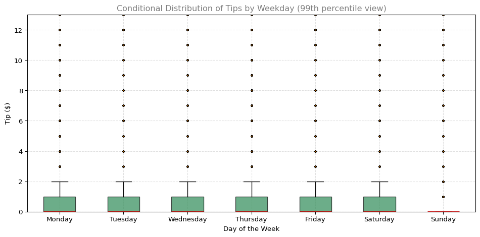
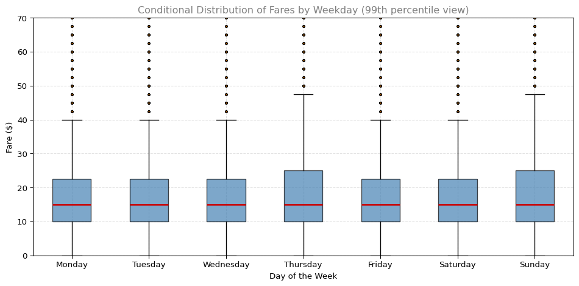

This lab is a continuation of the Week 1 rideshare notebook. In Week 1 you loaded the raw rideshare dataset, performed basic data cleaning, created…
Published
June 26, 2026
Introduction
This lab is a continuation of the Week 1 rideshare notebook. In Week 1 you loaded the raw rideshare dataset, performed basic data cleaning, created histograms, and explored probability and conditional probability. This week you will go further by applying descriptive statistics and more advanced visualization techniques to the cleaned dataset.
Learning objectives:
Compute and interpret descriptive statistics (mean, median, standard deviation, quartiles)
Construct and interpret box plots
Explore conditional distributions by grouping on a categorical variable
import pandas as pdimport numpy as npimport matplotlib.pyplot as pltdf = pd.read_csv('../../media/rideshare_2022_cleaned.csv', parse_dates=['trip_start_timestamp', 'date'])df.head()
trip_start_timestamp
trip_seconds
trip_miles
fare
tip
additional_charges
trip_total
shared_trip_authorized
trips_pooled
pickup_centroid_latitude
pickup_centroid_longitude
dropoff_centroid_latitude
dropoff_centroid_longitude
date
weekday
0
2022-01-01
3905.0
44.5
55.0
0.0
11.25
66.25
0
1
41.972563
-87.678846
NaN
NaN
2022-01-01
Saturday
1
2022-01-01
2299.0
25.0
32.5
7.0
7.18
46.68
0
1
41.878866
-87.625192
NaN
NaN
2022-01-01
Saturday
2
2022-01-01
275.0
1.5
7.5
0.0
1.02
8.52
0
1
41.792357
-87.617931
41.812949
-87.617860
2022-01-01
Saturday
3
2022-01-01
243.0
1.0
5.0
0.0
2.36
7.36
0
1
41.936310
-87.651563
41.943155
-87.640698
2022-01-01
Saturday
4
2022-01-01
364.0
1.3
5.0
0.0
2.36
7.36
0
1
41.921855
-87.646211
41.936237
-87.656412
2022-01-01
Saturday
The describe() method provides a quick summary of each numeric column, including count, mean, standard deviation, minimum, quartiles, and maximum.
df.describe()
trip_start_timestamp
trip_seconds
trip_miles
fare
tip
additional_charges
trip_total
shared_trip_authorized
trips_pooled
pickup_centroid_latitude
pickup_centroid_longitude
dropoff_centroid_latitude
dropoff_centroid_longitude
date
count
691098
691073.000000
691096.000000
689952.000000
689952.000000
689952.000000
689952.000000
691098.000000
691098.000000
635075.000000
635075.000000
632163.000000
632163.000000
691098
mean
2022-07-09 12:13:17.168419
1089.008338
6.941224
18.577024
1.264072
4.694999
24.536095
0.022537
1.010250
41.889642
-87.671920
41.890190
-87.674246
2022-07-09 02:16:40.835192
min
2022-01-01 00:00:00
1.000000
0.000000
0.000000
0.000000
0.000000
0.000000
0.000000
1.000000
41.650222
-87.913625
41.650222
-87.913625
2022-01-01 00:00:00
25%
2022-04-11 11:45:00
543.000000
2.000000
10.000000
0.000000
2.490000
13.440000
0.000000
1.000000
41.871016
-87.689319
41.871016
-87.691430
2022-04-11 00:00:00
50%
2022-07-12 09:45:00
880.000000
4.100000
15.000000
0.000000
3.550000
19.020000
0.000000
1.000000
41.893216
-87.654093
41.893216
-87.654007
2022-07-12 00:00:00
75%
2022-10-08 19:30:00
1416.000000
9.200000
22.500000
1.000000
5.460000
29.490000
0.000000
1.000000
41.934762
-87.631407
41.935706
-87.631407
2022-10-08 00:00:00
max
2022-12-31 12:45:00
34892.000000
366.900000
637.500000
100.000000
253.010000
656.750000
1.000000
5.000000
42.021224
-87.530712
42.021224
-87.530712
2022-12-31 00:00:00
std
NaN
782.835520
7.773458
14.069854
2.923235
4.314872
17.627719
0.148421
0.113987
0.067517
0.070488
0.067239
0.075001
NaN
A few observations from the summary statistics:
The mean trip distance is approximately 7 miles, but the median is only about 4 miles. This gap indicates a right-skewed distribution with some very long trips pulling the mean upward.
The mean trip duration is roughly 1,089 seconds (about 18 minutes).
The median fare is $15, while the mean is about $18.58. Again, the mean exceeds the median because of outliers on the high end.
The mean tip is $1.26, but the 50th percentile (median) tip is $0. This tells us that more than half of all rides receive no tip at all.
Maximum values are extreme (367 miles, $637 fare, $100 tip), confirming that there are significant outliers in the data.
Box Plots
A box plot displays the five-number summary (minimum, Q1, median, Q3, maximum) along with outliers. The box spans the interquartile range (IQR = Q3 - Q1), the line inside the box marks the median, and whiskers extend to the farthest data point within 1.5 times the IQR from the box edges. Points beyond the whiskers are plotted individually as outliers.
The fare box plot reveals a long right tail. The box itself is relatively compact (roughly $10 to $22.50), but there are many outliers stretching to over $600. This is characteristic of transportation data where most trips are short but a few are very expensive.
The tip box plot is even more dramatic. Since the median tip is $0 and Q1 is also $0, the lower portion of the box collapses. Every non-zero tip appears as an outlier in this representation. This highlights why it is often useful to analyze tippers separately from non-tippers.
Conditional Distributions by Weekday
A conditional distribution describes how a variable is distributed given a specific condition. Here we examine how tips and fares vary by day of the week. Formally, we are looking at distributions like \(P(\text{tip} \mid \text{weekday} = \text{Monday})\).
Tips by Weekday
WEEKDAYS = ['Monday', 'Tuesday', 'Wednesday', 'Thursday', 'Friday', 'Saturday', 'Sunday']fig, ax = plt.subplots(figsize=(10, 5))data_by_day = [df[df['weekday'] == day]['tip'].dropna().values for day in WEEKDAYS]bp = ax.boxplot(data_by_day, labels=WEEKDAYS, patch_artist=True, boxprops=dict(facecolor='#2E8B57', alpha=0.7), medianprops=dict(color='#CC0000', linewidth=2), flierprops=dict(marker='o', markerfacecolor='#CC7000', markersize=2, alpha=0.2))# The single box plot above showed tips reach $100, but letting one extreme# ride set the scale would crush all seven boxes flat. Zoom to the 99th# percentile so the boxes are actually comparable across days.ax.set_ylim(0, df['tip'].quantile(0.99))ax.set_xlabel('Day of the Week')ax.set_ylabel('Tip ($)')ax.set_title('Conditional Distribution of Tips by Weekday (99th percentile view)', fontsize=12, color='gray')ax.grid(True, linestyle='--', alpha=0.4)plt.tight_layout()plt.show()

Examining the box plots of tips split by weekday, the distributions look nearly identical from Monday through Saturday: the median is $0 on every day (since most riders do not tip in the app), and the 75th percentile sits at $1. Sunday is the one visible exception — its box collapses entirely to $0, meaning more than three quarters of Sunday rides receive no tip at all. Apart from that, tipping behavior does not change much depending on the day of the week, consistent with what we observed in an earlier lab when computing conditional tipping probabilities. (The y-axis is zoomed to the 99th percentile, about $13 — the rare very large tips seen in the previous section fall outside this view.)
Fares by Weekday
fig, ax = plt.subplots(figsize=(10, 5))data_by_day_fare = [df[df['weekday'] == day]['fare'].dropna().values for day in WEEKDAYS]bp = ax.boxplot(data_by_day_fare, labels=WEEKDAYS, patch_artist=True, boxprops=dict(facecolor='#4682B4', alpha=0.7), medianprops=dict(color='#CC0000', linewidth=2), flierprops=dict(marker='o', markerfacecolor='#CC7000', markersize=2, alpha=0.2))# Same zoom as the tips plot: without it, the $637 maximum fare sets the# scale and the boxes become unreadably flat.ax.set_ylim(0, df['fare'].quantile(0.99))ax.set_xlabel('Day of the Week')ax.set_ylabel('Fare ($)')ax.set_title('Conditional Distribution of Fares by Weekday (99th percentile view)', fontsize=12, color='gray')ax.grid(True, linestyle='--', alpha=0.4)plt.tight_layout()plt.show()

With the boxes readable, a perhaps surprising picture emerges: the median fare is exactly $15 on every single day of the week. The variation shows up higher in the distribution — Thursday and Sunday have taller boxes (75th percentile of $25 versus $22.50 on other days) and slightly longer whiskers, meaning those days see a larger share of pricier trips even though the typical trip costs the same. This is a good example of why comparing whole distributions beats comparing a single summary number. (The y-axis is zoomed to the 99th percentile, $70 — the extreme fares from the box plot section fall outside this view.)
Joint Distribution and Correlation
A joint distribution describes the relationship between two variables simultaneously. We can visualize joint distributions using scatter plots and quantify the linear relationship using correlation.
Scatter Plot: Tip vs. Trip Miles
To focus on the relationship between tip amount and distance, we filter to rides where a tip was actually given.
%config InlineBackend.figure_formats = ['png']df_tippers = df[df['tip'] >0]# A few extreme rides would stretch the axes and squash the bulk of the data# into the corner, so we zoom both axes to the 99th percentile.x_lim = df_tippers['trip_miles'].quantile(0.99)y_lim = df_tippers['tip'].quantile(0.99)fig, ax = plt.subplots(figsize=(8, 6))# With ~170k points, a faint alpha is needed so the zoomed view shows density# differences instead of saturating into solid bands.ax.scatter(df_tippers['trip_miles'], df_tippers['tip'], alpha=0.02, s=2, color='#4682B4')ax.set_xlim(0, x_lim)ax.set_ylim(0, y_lim)ax.set_xlabel('Trip Miles')ax.set_ylabel('Tip ($)')ax.set_title('Joint Distribution: Tip vs. Trip Miles (Tippers Only, 99th percentile view)', fontsize=12, color='gray')ax.grid(True, linestyle='--', alpha=0.4)plt.tight_layout()plt.show()
The scatter plot shows a clear positive relationship: the smallest tips ($1–$3) come almost entirely from short rides, while larger tips stretch out to longer distances. The horizontal bands are real — riders overwhelmingly tip in whole-dollar amounts. Notice also the dense vertical strip around 18 miles: those are likely airport runs, a fixed-distance trip that earns consistently larger tips. There is considerable spread, meaning trip distance alone does not fully determine the tip amount. (The axes are zoomed to the 99th percentile — a handful of extreme rides fall outside this view.)
Note: Because this plot contains over 10,000 points, we render it as PNG rather than SVG to keep file sizes manageable.
Computing Correlation
The Pearson correlation coefficient quantifies the strength and direction of the linear relationship between two variables. It ranges from -1 (perfect negative linear relationship) to +1 (perfect positive linear relationship), with 0 indicating no linear relationship.
correlation = df_tippers['tip'].corr(df_tippers['trip_miles'])print(f"Correlation between tip and trip_miles (tippers only): {correlation:.3f}")
Correlation between tip and trip_miles (tippers only): 0.637
The correlation of approximately 0.637 indicates a moderate positive linear relationship between trip distance and tip amount. This makes sense: riders who tip often base it on a percentage of the fare, and fare increases with distance. However, the correlation is not close to 1.0, meaning other factors (generosity, service quality, payment method) also influence tipping behavior.
Pickup Locations Map
Geographic visualization can reveal spatial patterns in rideshare data. Below is an interactive map showing a random sample of 500 pickup locations.
import folium# Sample 500 points with valid coordinatesdf_geo = df.dropna(subset=['pickup_centroid_latitude', 'pickup_centroid_longitude'])df_sample = df_geo.sample(n=500, random_state=42)# Create a map centered on Chicagom = folium.Map(location=[41.88, -87.63], zoom_start=11)# Add markers for sampled pickup locationsfor _, row in df_sample.iterrows(): folium.CircleMarker( location=[row['pickup_centroid_latitude'], row['pickup_centroid_longitude']], radius=3, color='#4682B4', fill=True, fill_color='#4682B4', fill_opacity=0.6, weight=1 ).add_to(m)m
Make this Notebook Trusted to load map: File -> Trust Notebook
The map reveals that rideshare pickups are heavily concentrated in downtown Chicago and along the North Side corridor. The Loop, Near North Side, and areas near O’Hare Airport show particularly high density. This spatial concentration reflects where rideshare demand is highest: business districts, entertainment areas, and transportation hubs.
Key Takeaways
Descriptive statistics reveal that rideshare data is heavily right-skewed, with means consistently exceeding medians due to extreme outliers.
Box plots provide a compact visualization of the five-number summary and make outliers immediately visible.
Conditional distributions (splitting by weekday) show that tipping behavior is relatively stable across days, while fares are slightly higher on weekends.
Joint distributions (scatter plots) reveal the positive relationship between trip distance and tip amount.
Correlation (approximately 0.637 for tip vs. trip miles among tippers) quantifies this relationship as moderately positive.
Geographic visualization shows that rideshare pickups are concentrated in downtown Chicago and major transit corridors.
In future weeks, you will build on these techniques by fitting probability distributions, performing hypothesis tests, and building predictive models.